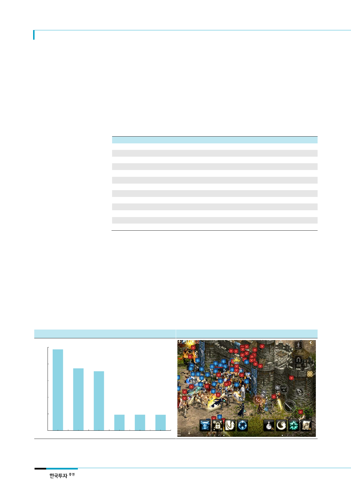

엔씨소프트(036570)
아직 추가되지 않은 다양한
과금요소
신규 서버 추가에 따른 매출
성장 가능성에 주목
신규 클래스 외에도 과금을 유도할 수 있는 다양한 콘텐츠가 남아있다는 점도 매출 반등
이 예상되는 이유이다. 엔씨소프트는 아이템 슬롯, 마법, 신규 직업 추가 등을 통해 ‘리니
지1’의 장기 흥행을 시현했다. 실제로 ‘리니지1’은 출시 20년이 지난 2016년 4분기에 최
대 매출액을 기록했다. ‘리니지M’에는 아직 ‘리니지1’ 초기 콘텐츠만이 이식된 상황으로
향후 <표 1>과 같은 업데이트를 통해 라이프 사이클을 장기화하는 동시에 기존 모바일 게
임들과는 차별화된 매출 추이를 시현할 수 있을 것으로 예상한다. 한편 ‘공성전’과 함께
‘리니지M’의 고유 기능인 ‘개인간 거래’의 추가에 따른 긍정적인 효과도 기대된다.
<표 1> 리니지1 주요 업데이트 내용
시기
2008 년 12 월 17 일
2012 년 9 월 26 일
2012 년 10 월 10 일
2013 년 4 월 10 일
2013 년 8 월 28 일
2013 년 9 월 4 일
2013 년 9 월 11 일
2014 년 6 월 11 일
2014 년 12 월 24 일
2015 년 1 월 28 일
2015 년 12 월 16 일
2015 년 12 월 23 일
2016 년 11 월 16 일
자료: 엔씨소프트, 한국투자증권
내용
신규 클래스 용기사, 환술사 추가
전 클래스 대규모 업데이트 및 리워크
영웅 전직겸 아이템 슬롯 추가
상위 아이템(10+검)에 대한 속성 추가
클래스 전용 무기 추가 및 상향
아이템 슬롯 추가
클래스별 변신 폭 증가
8 번째 클래스, 전사 추가
아이템 슬롯 추가
마법인형 등급 분류 및 개편
아이템 리뉴얼, 전설의 부활
전 클래스 신규 마법 추가
신규 아이템 슬롯 추가 (휘장 & 견갑)
신규 서버의 추가 또한 ‘리니지M’ 성과에 긍정적으로 작용할 전망이다. 현재 보유한 130
개 서버들은 이용자들이 집중되어 있는 ‘혼잡(도시) 서버’와 다수의 이용자들이 떠난 ‘원활
(시골) 서버’로 분류된다. 도시 서버의 경우 게임이 제공할 수 있는 모든 콘텐츠들을 다른
이용자들과 즐길 수 있는 반면 시골 서버의 경우 이용자가 부족해 아이템 제작을 위한 재
료 수급 및 ‘파티 퀘스트’ 등의 일부 콘텐츠를 플레이하기 어렵다. 아직은 서버 이전 서비
스가 제공되지 않기 때문에 시골 서버 이용자들은 기존 캐릭터를 포기하고 신규 서버에서
새로운 커뮤니티를 구축할 것으로 예상된다. 초기 캐릭터 육성에 소모된 리소스가 재차
투입될 것이라는 의미이다. 또한 신규 직업 육성 또한 플레이어간의 격차가 없는 신규 서
버에서 이루어질 것으로 예상한다.
[그림 6] 리니지M: 상위 3개 서버와 하위 3개 서버 세금 비교
(1,000개)
210
세금 : 아이템 거래 성립 시, 특정 혈맹이 보유한
성에 아이템 가격에 1~5%를 세금으로 지불
168
[그림 7] 다수의 이용자 참여가 요구되는 리니지M의 공성전
126
84
42
0
데포로쥬01 데스나이트03 판도라01 린드비오르03
자료: Inven, 한국투자증권
하딘06
듀크데필04
자료: 엔씨소프트, 한국투자증권
4